해외 취약계층 수술 지원사업
질환으로 고통받고 있는 아이들의
수술을 적극 지원합니다
수술을 적극 지원합니다
불의의 사고로 신체의 일부가 절단되었거나,
심각한 선천성 장애를 가지고 있음에도
경제적 환경적으로 적절한 치료를 받지 못하는 개발도상국의
취약계층의 환아들에게 수술지원 및 사후관리를 진행하고 있습니다.
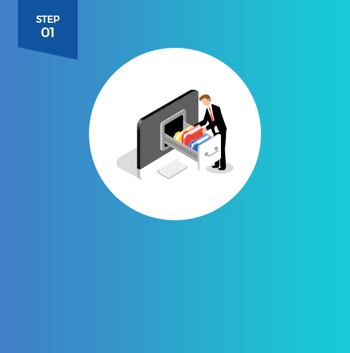
한국의 각 협력병원에 전달합니다.
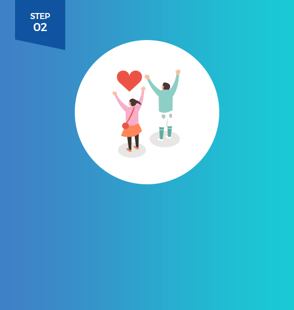
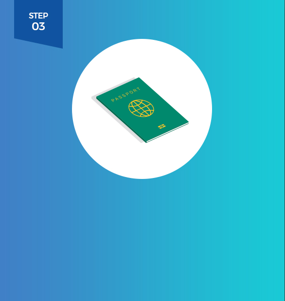
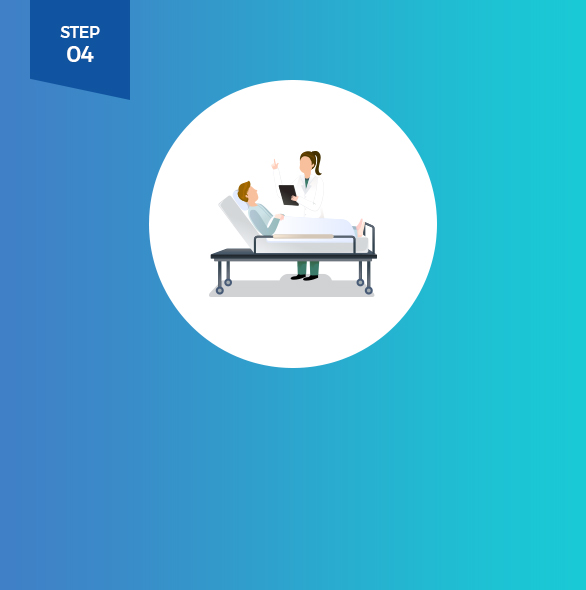
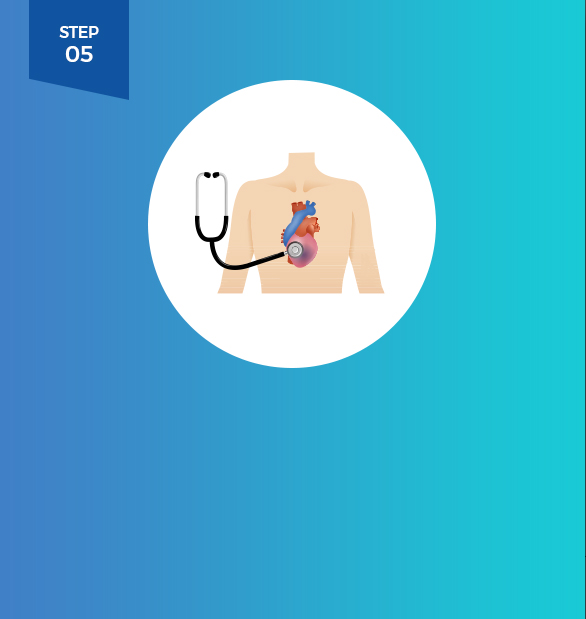
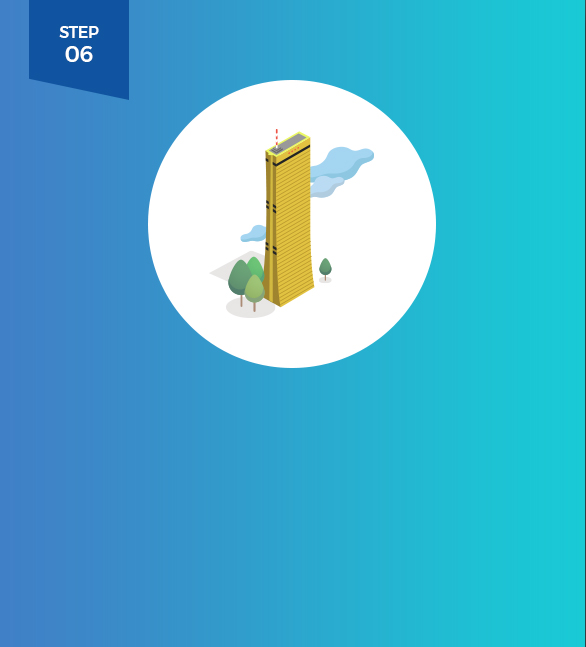
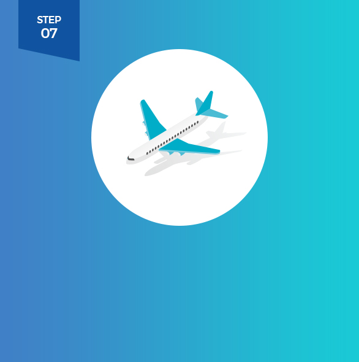
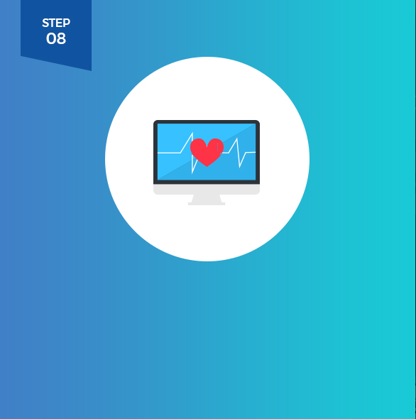
- 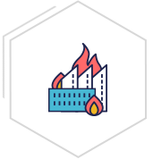화상재해를 입은 빈곤가정에
의료비 지원 - 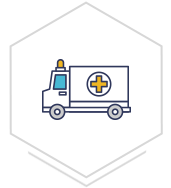긴급지원이 필요한 장애아동에게
의료비 지원 - 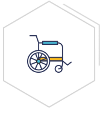선천성 장애를 지니고 있는
장애 아동의 치료 지원
- 20018년 베트남의 구순구개열 즈엉뀌 환아의 수술지원을 시작으로 베트남, 필리핀, 캄보디아, 인도네시아 등 2018년 현재까지 총 17명 환아의 수술을 지원하였습니다. 대부분 환아들은 경제적으로 어려운 환경에 처해있는 가정의 아이들로 수술지원 뿐 아니라, 아이들이 향후 건강하게 지낼 수 있도록 사후관리 지원 및 아동 결연 지원까지 함께 연결하여 아이를 후원하고 있습니다.
- 해외 취약계층 수술 지원사업 현황
(2008년 12월 ~ 2018년 10월 기준) - 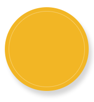
총5개국
17명
- 베트남
7명 - 캄보디아
1명 - 필리핀
4명 - 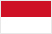인도네시아
4명 - 몽골
1명
- 수술지원
사업시작
베트남아동
1명 - 17명
- 2008.12
- 2018.10